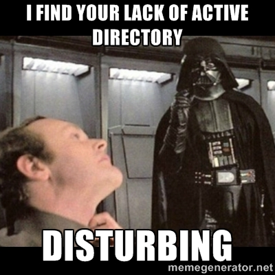
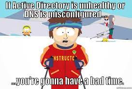

Conclusion
Congratulations! You have completed our how-to guide on managing DNS and DHCP using PowerShell. We hope that you found this guide helpful and informative, and that it has given you the confidence to manage your own DNS and DHCP infrastructure.
As we conclude this guide, we leave you with a few memes related to DNS and DHCP:

When your Active Directory is acting up and you have to take matters into your own hands.

When you thought you configured DNS correctly, but the errors keep rolling in.
Thank you for taking the time to read our guide. We hope that you found it helpful and entertaining. Happy DNS-ing and DHCP-ing!